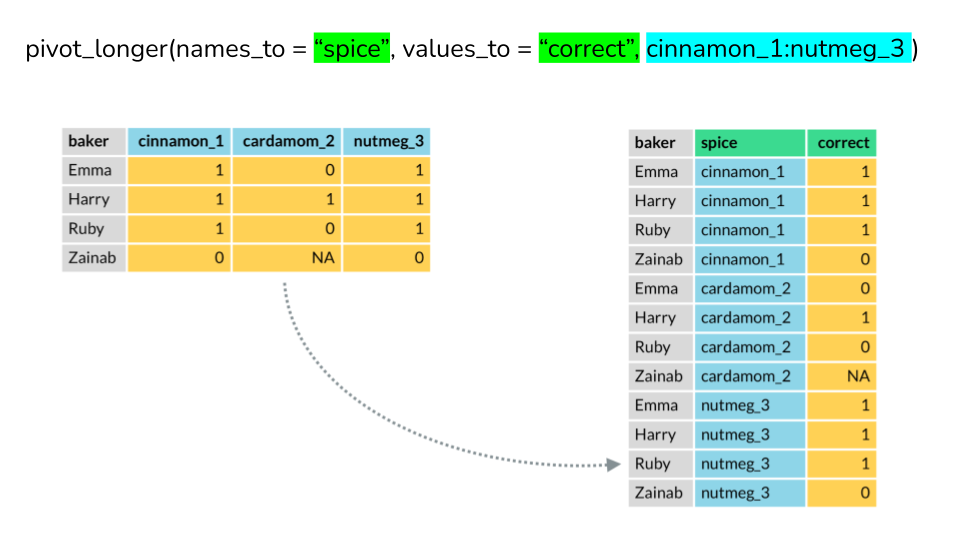

Pivot Wide to Long to Wide
Learning how to make wide data long, or long data wide, might be one of the biggest stumbling blocks that R learners encounter.
But don’t panic, there are NEW functions in the tidyr that make the process of converting your data from wide to long format and back again, much easier… so much so that, like RLady Sharla Gelfand, you might even get excited to do it!
honestly i used to dread having to reshape my data because it meant relearning spread() and gather() every single time but pivot_wider() and pivot_longer() are so easy to use that now i get excited when i have to do it ü§ì
— Sharla Gelfand (@sharlagelfand) April 21, 2020
Why do you need to know how to convert your data from wide to long (or vice versa)?
In R circles there is a lot of talk of the need for “tidy data”. You can read more about what Hadley Wickham (creator of the Tidyverse) means by tidy data here, but in short, tidy data is when
- Each variable forms a column.
- Each observation forms a row.
- Each type of observational unit forms a table.
When you entered your data in excel, you probably entered it in wide format. Data in wide format has observations spread across several columns; each column contains data from a different condition (or combination of conditions); wide data is messy.
In the wide example below, we have scores from participants who were tested twice (Time 1 and Time 2) after studying different lists of words under two different conditions (Condition 1 and Condition 2).
In contrast, data in long format has all the observations in a single column and variables in separate columns.

Many functions in R assume your data is “tidy” and just work better when you feed them long data.
Should I could copy and paste_transpose the scores?
No, no, no… this is not as hard as it looks. R employs cute monsters under the hood to pivot your data from wide to long pivot_longer, or from long to wide pivot_wider. All in a single line of code.

Credit to Allison Horst for the CUTE art.
In this lesson, we will use three different examples to illustrate how to use pivot_longer and pivot_wider to convert your data from wide to long and back to wide.
- Great British Bakeoff data from Alison Hill
- Some summary data from our own sydneybeaches dataset
- A tricky example from a cognition experiment out of Dani Navarro’s lab
If you haven’t already, now is the time to install the RYouWithMe data package. Check out the package vignette or watch this video for details about how to install and use the package to read the bakers, beach summary and frames data.
Each example is a little different, but in each case we can use pivot_longer and pivot_wider to switch between different formats. We’ll walk you through the process step by step, but the basic idea is shown graphically in this lovely animation made by Garrick Aden-Buie and adapted by Mara Averick.

Example 1: which bakers can identify spices?
Thanks to Alison Hill for sharing this example. This data is from a Great British Bakeoff challenge; I assume that bakers were tested on their ability to identify different spices.
The dataframe on the left is in wide format; the performance of each baker in each spice test is listed across different columns.
 Image credit: Alison Hill
The dataframe on the right is in long format; all of the accuracy scores are in a single column and information about which baker and spice test each observation came from are represented in separate variables.
Using pivot_longer (wide to long)
The pivot_longer function will change your wide data to long format in a single line of code.
You need to tell it …
- data = dataframe you want to pivot
- names_to = name of column you want to create to capture condition (i.e. spice)
- values_to = name of column you want to contain data values (i.e. correct)
- column X:column Y = range of columns that you have and want to pivot_longer (cinnamon_1:nutmeg_3)
Image credit: Alison Hill
Using pivot_wider (long to wide)
The pivot_wider function will change your long data to wide format in a single line of code.
You need to tell it …
- data = dataframe you want to pivot
- names_from = name of column you want to end up in several columns
- values_from = name of column that currently contains data values
Image credit: Alison Hill
Your turn
Here is a link to the bakers data in wide format.
- download the data and put it in your data folder
- open a new script
- load the tidyverse and here packages
- use
hereandread_csvto read the bakers data (go back to Basic Basics if you’ve forgotten how this works) - use
pivot_longerto convert the bakers data from wide to long, replicating Alison’s steps above.
Example 2: long beaches are better than wide
The raw sydneybeaches data is helpfully already in long format, but I have created a couple of summary datasets so we can practice changing data from wide to long and back again.
In the wide format, I’ve averaged bug levels for each year and the beach sites appear in separate columns.
In long format, the bug levels from each site are all in a single column and year and site are represented as separate variables.
Your turn
Here is a link to the beaches summary in wide format
- download the data and put it in your data folder
- open a new script
- load library tidyverse
- use
hereandread_csvto read the beaches data (go back to Basic Basics if you’ve forgotten how this works) - use
pivot_longerto convert the beaches data from wide to long
In this screencast, I walk you through how to use pivot_longer to make the wide beaches data long.
In this one, learn how to use pivot_wider to make long beaches data wide.
Example 3: A tricky one
The bakers data and beaches data are relatively simple. What happens if there is more that one condition that you are trying to pivot across?
This sampling frames dataset comes from an experiment from Danielle Navarro’s lab. In this study, each participant made reasoning judgements about items either based on a category or property (condition). They made repeated judgements after being given a small, medium, and large “samples” of information. For each of these sampling conditions, there were 7 different items that participants made a judgement about.
Here is what the data looks like in wide format.
Each row contains all of the data from a single participant and the column represent information about BOTH sampling condition (small, medium, large) and item (1-7).
Your turn
Here is a link to the frames data in wide format.
- download the data and put it in your data folder
- open a new script
- load the tidyverse and here packages
- use
hereandread_csvto read the frames data (go back to Basic Basics if you’ve forgotten how this works) - use
pivot_longerto convert the frames data from wide to long
How did you go?
Hopefully you ended up with a data frame that looks something like this.
If not, check out how you can add an extra argument to pivot_longer() and accomplish this pivot in a single step.
Your turn: Try your own data
Is your data in wide format? No problem. Sort out answers to the following questions and you can convert it to long format with a single line of code.
- What do you want your “names” column to be called?
- What are the “values”?
- Which columns do you want to pivot?
Looking for more?
Some additional links that might be helpful!
Now that your data is in long format- you are ready for VizWhiz!